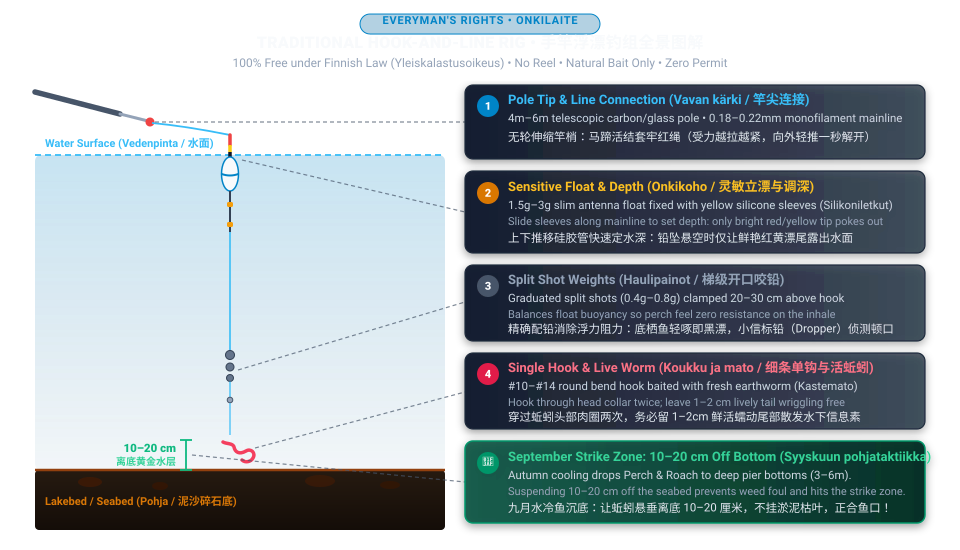

🎣 1. Traditional Hook-and-Line Angling (Onkiminen) — The Universal Zero-Barrier Method
In Finland, hook-and-line angling (Onkiminen) is an ancient cultural cornerstone protected under Everyman's Rights (Yleiskalastusoikeus). It requires zero licenses or permits and is 100% free for everyone across all public and private lakes, ponds, canals, and Baltic marine shores (outside salmonid rapids and nature reserves). Because it has no mechanical reel to tangle and requires no casting coordination, it is universally considered the ultimate beginner-friendly gateway into Finnish fishing.

🔧 Step-by-Step Rigging & Execution
- Connecting Line to Pole Tip (Siiman kiinnitys vavan kärkeen): Modern telescopic poles come with a small fabric tip braid (or plastic Stonfo loop). Tie a simple double-loop slipknot (马蹄结 / horse-hoof knot) on your monofilament line, slip the loop over the braid knot, and pull snug. Ensure total line length equals your rod length (e.g., 5m line for a 5m rod) so hooked fish swing directly into your waiting hand.
- Balancing the Float (Kohon painotus): Attach split shot sinkers 20–30 cm above the hook. Calibrate weight until only the brightly painted antenna (red/orange) pokes above the water line. If the float body rides high, fish feel heavy resistance and spit the bait; if overweighted, it will sink under wave action.
- Setting the Strike Depth (Syvyyden säätö & Pohjaluotaus): Slide the silicone float sleeves along the line. Start deep until the float tips flat on its side (indicating the sinker has touched bottom), then slide the float down 15–25 cm. For Perch (Ahven) and Roach (Särki), your bait should hang suspended 10–20 cm above the seabed weeds.
- Baiting Live Earthworms (Madon pujottaminen): Take a fresh earthworm (kastemato or onkimato). Thread the hook through the thick head collar twice, leaving 1–2 cm of lively wriggling tail. The natural movement in the water sends irresistible scent and vibrations to nearby fish.
- Detecting the Bite & Landing (Tärppi ja väsytys): Lower the rig gently beside a pier, boat dock, or weed margin. Watch the float antenna intently:
- Perch (Ahven): The float will twitch twice and plunge decisively beneath the surface (koho sukeltaa). Strike upward smoothly!
- Roach (Särki): Rapid trembling and vibrating bobbles. Strike when the float begins moving steadily sideways.
- Bream (Lahna): The float tilts flat and rises up on the water surface (koho kaatuu) as the bottom-feeding bream tilts downward and lifts your sinker. Strike immediately!
🎯 2. Jigging & Soft Plastics (Jigaus) — Trajectory & Mechanics
Jigging with silicone soft baits mounted on tungsten or lead jigheads is by far the most productive summer and autumn method for perch and zander in Finland. To master it, understand how the lure moves along the seabed:

🏖️ 3. Spring Bottom Angling for Whitefish (Siianonginta)
Immediately after coastal sea ice melts in April and May, anglers head to sandy beaches in Helsinki, Espoo, and Porkkalanniemi. Study the exact terminal rig and action below:

🌉 4. Baltic Herring Sabiki Jigging (Silakanlitkaus)
In May–June and October, immense shoals of Baltic herring enter the inner archipelago channels. Using a specialized 6-to-8 hook bare gold rig (silakanlitka) with a 35g sinker, you jig vertically from bridges.
❄️ 5. Winter Ice Fishing (Pilkintä) & Safety Protocol
From December to April, Finnish waters freeze solid. Learn how to drill clean holes, work balance jigs and mormyshkas, and wear safety picks.